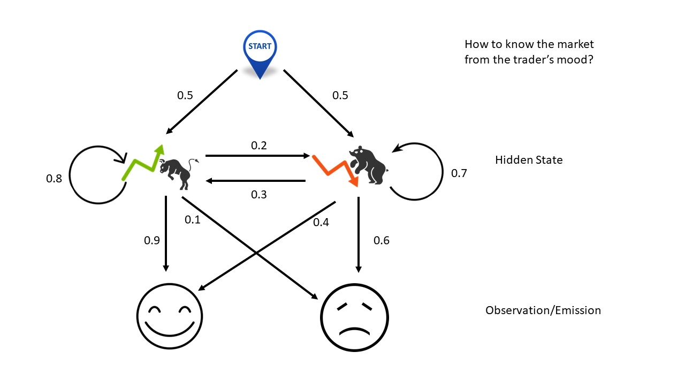

Introduction
Hidden Markov Model (HMM) is a Markov Model with latent state space. It is the discrete version of Dynamic Linear Model, commonly seen in speech recognition. In quantitative trading, it has been applied to detecting latent market regimes ([2], [3]). I’ll relegate technical details to appendix and present the intuitions by an example.

No cell phone, no TV, without logging into Bloomberg terminal, this simple example teaches you how to guess market movements solely from the trader’s mood. Here the two hidden states are market rally or drop. The transition matrix stipulates that if the market goes up today, there are 80% chance that the trend will continue tomorrow and 20% chance that the trend will reverse. On the contrary, if the market drops today, there are 70% chance sliding further tomorrow and 30% chance turning back up.
The emission matrix shows the dependency of the trader’s mood on mareket changes. If she is just moody (high noise/information ratio), it would tell us nothing about the market. If somehow her mood is driven by her PnL, then we might be able to learn the market from her behavior. In this example, it says that if the market heads up, she would most likely be happy but there are 10% chance that something else, for example a car accident in the morning, upsets here. On the contrary, if the market goes down she would be unhappy, unless something else, perphas today happens to be her anniversary, cheers her up.
With all these uncertainties/probabilities in place, there are three questions to ask, in the order of complexity:
Evaluation: What is the odds that she is happy three days in a row?
Decoding: Given that she is happy three days in a row, what would be the most likely market movements in the last three days?
Learning: If we don’t know any of the probablities labeled next to the arrows in the figure, given that she is happy three days in a row, what would be our best estimates of these probabilities (model parameters)?
The first question can be answered by forward OR backward algorithm (do not confuse with forward-backward algorithm). The second question is tackled by Viterbi algorithm. The third one is solved by Baum-Welch algorithm, an forward-backward expectation maximization approach.
Regime Detection
This section follows the accompanying example of the package HMMLearn. The code is located on Github.
1 |
Reference
- [1] Petris, Giovanni, Sonia Petrone, and Patrizia Campagnoli. “Dynamic linear models.” Dynamic Linear Models with R. Springer, New York, NY, 2009. 31-84.
- [2] Nguyen, Nguyet, and Dung Nguyen. “Hidden Markov model for stock selection.” Risks 3.4 (2015): 455-473.
- [3] Nguyen, Nguyet. “Hidden Markov Model for Stock Trading.” International Journal of Financial Studies 6.2 (2018): 36.
- [4] Wikipeida, Hidden Markov Model
- [5] Wikipeida, Forward algorithm
- [6] Wikipedia, Viterbi algorithm
- [7] Wikipedia, Baum–Welch algorithm
Appendix
You might need some basic understanding about Markov Chain in order to continue.
This example uses the notations on Wikipedia. In particular the hidden markov system $\theta=\left(A,B,\pi\right)$ is given by
$$
\begin{matrix}
A=\left[ \begin {array}{cc} 0.8 & 0.2\\ 0.3 & 0.7 \end{array} \right], B=\left[ \begin {array}{cc} 0.9 & 0.1\\ 0.4 & 0.6 \end{array} \right],\pi=\left[ \begin {array}{c} 0.5\\ 0.5 \end{array} \right]
\tag{A1}
\end{matrix}
$$
You can find these numbers from the figure above.
First Question – Evaluation
The first question is, given we know $\theta$, what is the odds that she is happy three days in a row? This is answered by the forward procedure or backward procedure and is solved recursively.
| Day | Probability |
|---|---|
| 1 | $\alpha_1(1)=0.5\times 0.9=0.45$ |
| $\alpha_2(1)=0.5\times 0.4=0.2$ | |
| 2 | $\alpha_1(2)=0.9\times\left[\alpha_1(1)\times0.8+\alpha_2(1)\times0.3\right]=0.378$ |
| $\alpha_2(2)=0.4\times\left[\alpha_1(1)\times0.2+\alpha_2(1)\times0.7\right]=0.092$ | |
| 3 | $\alpha_1(3)=0.9\times\left[\alpha_1(2)\times0.8+\alpha_2(2)\times0.3\right]=0.297$ |
| $\alpha_2(3)=0.4\times\left[\alpha_1(2)\times0.2+\alpha_2(2)\times0.7\right]=0.056$ |
On day 1, there are $45\%$ chance to observe a happy face (H) and market is up; there are $20\%$ chance to observe a happy face (H) and market is down. So in total there are $65\%$ chance that she would be happy and 35% chance that she would be sad (S). Similarly, the probabilty of seeing $HH$ is $47\%$. Other possibilities (that is, $HH$, $HS$ and $SS$) add up to $53\%$.
Finailly on day three, the answer to our question becomes $35.3\%$.
If we iterate backwards,
| Day | Probability |
|---|---|
| 1 | $\beta_1(3)=1.0$ |
| $\beta_2(3)=1.0$ | |
| 2 | $\beta_1(2)=\beta_1(2)\times0.8\times0.9+\beta_2(2)\times0.2\times0.4=0.8$ |
| $\beta_2(2)=\beta_1(2)\times0.3\times0.9+\beta_2(2)\times0.7\times0.4=0.55$ | |
| 3 | $\beta_1(1)=0.9\times\left[\beta_1(2)0.8+\beta_2(2)0.3\right]=0.62$ |
| $\beta_2(1)=0.4\times\left[\beta_1(2)0.2+\beta_2(2)0.7\right]=0.37$ |
The final probability should match that from the forward algorithm ([2])
$$
\Pr(HHH|\theta)=0.50.620.9+0.50.370.4=35.3\%
\tag{A2}
$$
Second Question – Decoding
Viterbi algorithm is created to solve question 2. The notations follows Wikipedia and the code can be found in Github.
| Day | Prob | Max Sate |
|---|---|---|
| 1 | $T_1(1,1)=0.5*0.9=0.45$ | $T_2(1,1)=’Up’$ |
| $T_1(2,1)=0.5*0.4=0.2$ | $T_2(2,1)=’Up’$ | |
| 2 | $T_1(1,2)=max\left(0.450.8,0.20.3\right)*0.9=0.324$ | $T_2(1,2)=’Up’$ |
| $T_1(2,2)=max\left(0.450.2,0.20.7\right)*0.4=0.056$ | $T_2(2,2)=’Down’$ | |
| 3 | $T_1(1,3)=max\left(0.3240.8,0.0560.3\right)*0.9=0.23328$ | $T_2(1,3)=’Up’$ |
| $T_1(2,3)=max\left(0.3240.2,0.0560.7\right)*0.4=0.02592$ | $T_2(2,3)=’Up’$ |
On day 1, the table is initialized. Then on day 2 and day3, it uses dynamic programming to find the optimal probability and states recursively. Finally, the most probable hidden states for the three days are {‘Up’,’Up’,’Up’} with maximum probability of $23.328\%$. In other words, if she is happy three days in a row, most likely the market is also on a three-day winning streak.
Third Question – Learning
The well-known Baum–Welch algorithm is designed to find teh local maximum iteratively. It takes the following steps,
- Calculate forward probabilities $\alpha_i(t)$ with the forward algorithm
- Calculate backward probabilities $\beta_i(t)$ with the backward algorithm
- Expectation – calculate the probability of being in state $i$ at time $t$, $\gamma_i(t)$; and the probability of being in state $i$ and $j$ at times $t$ and $t+1$, $\xi_{ij}(t)$
- Maximization – update the new model parameters (start probabilities, transition probabilities, emission probabilities)
- Repeat step 1 through 4 until the change in log likelihood converges.
Back to our example, assume $\theta$ in the figure above is not the actual but our current belief. Then we have done step 1 and 2 as in the first question. To proceed.
| Day | Probability | Probability |
|---|---|---|
| 1 | $\gamma_1(1)=0.790368$ | $\gamma_2(1)=0.209632$ |
| $\xi_{11}(1)=0.2592$ | $\xi_{12}(1)=0.0198$ | |
| $\xi_{21}(1)=0.0432$ | $\xi_{22}(1)=0.0308$ | |
| 2 | $\gamma_1(2)=0.856657$ | $\gamma_2(2)=0.143343$ |
| $\xi_{11}(2)=0.27216$ | $\xi_{12}(2)=0.03024$ | |
| $\xi_{21}(2)=0.02484$ | $\xi_{22}(2)=0.02576$ | |
| 3 | $\gamma_1(3)=0.84136$ | $\gamma_2(3)=0.15864$ |
Step $4$ updates the new normalized parameters as follows,
$$
\begin{matrix}
A^{}=\left[ \begin {array}{cc} 0.913932 & 0.086068 \\ 0.546067 & 0.453933 \end{array} \right], B^{}=\left[ \begin {array}{cc} 1.0 & 0.0 \\ 1.0 & 0.0 \end{array} \right],\pi^{*}=\left[ \begin {array}{c} 0.790368 \\ 0.209632 \end{array} \right]
\tag{A1}
\end{matrix}
$$
These steps are now repeated iteratively until it converges.